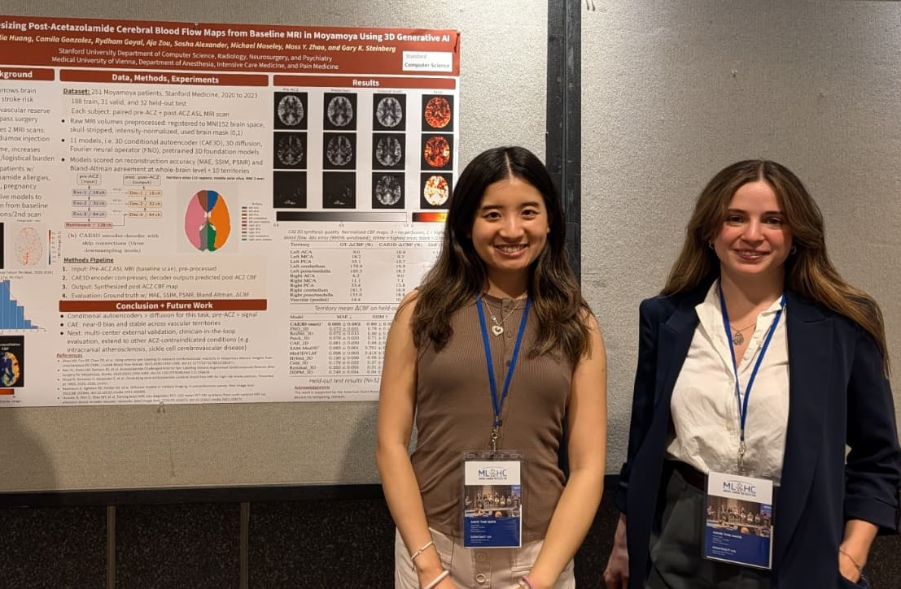

Our paper Synthesizing Post-Acetazolamide Cerebral Blood Flow Maps from Baseline MRI in Moyamoya Using 3D Generative AI, led by Juli Huang with Stanford Radiology and Neurosurgery, was presented at Machine Learning for Healthcare (MLHC 2026) in Baltimore, USA. The 3D conditional autoencoder CAE3D, which extends Rydham's MIDL work, predicts the post-acetazolamide perfusion map from the baseline ASL scan alone, a step towards assessing cerebrovascular reserve in patients who cannot receive the drug.